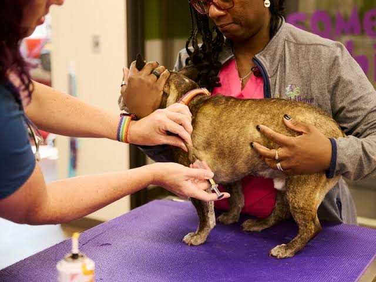
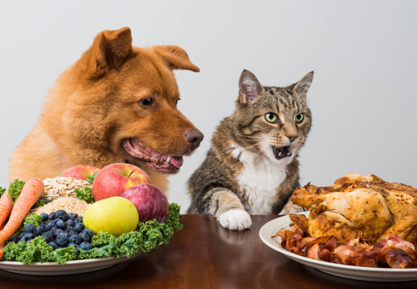
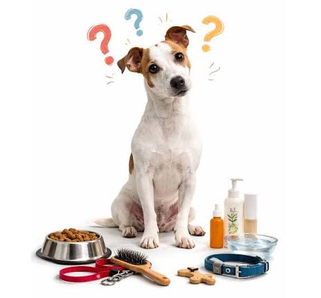

SU SALUD ES LO MÁS IMPORTANTE
Una mascota sana es una mascota feliz
Cuidar su salud es una forma de demostrarle amor. Conoce algunos consejos para ayudar a tu mascota a mantenerse sana y llena de energía.
Conocer consejos
SU SALUD ES LO MÁS IMPORTANTE
Cuidar su salud es una forma de demostrarle amor. Conoce algunos consejos para ayudar a tu mascota a mantenerse sana y llena de energía.
Conocer consejos
PREVENIR TAMBIÉN ES CUIDAR
Las visitas al veterinario, las vacunas y la prevención ayudan a cuidar la salud de tu mascota. Cada animal tiene necesidades diferentes, por eso es importante recibir orientación profesional.
CUIDADOS QUE HACEN LA DIFERENCIA
Estas son algunas recomendaciones para proteger a tu compañero todos los días.
Lleva a tu mascota a revisiones periódicas para conocer su estado de salud y detectar posibles problemas a tiempo.

Consulta con el veterinario cuáles son las vacunas que necesita tu mascota y cuándo debe recibirlas.

Ofrécele alimento adecuado para su especie, edad y necesidades. También debe tener agua limpia y fresca.

Mantén limpio su espacio y pregunta al veterinario cómo prevenir pulgas, garrapatas y otros parásitos.
Presta atención a cambios en su apetito, energía o comportamiento. Si notas algo extraño, consulta con un veterinario.
Una mascota necesita atención, prevención, paciencia y mucho cariño para disfrutar de una buena calidad de vida.
RECUERDA
No administres medicamentos de uso humano a tu mascota sin indicación veterinaria. Si presenta síntomas preocupantes, busca atención profesional.
Conocer sobre su bienestar